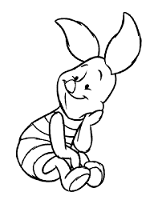
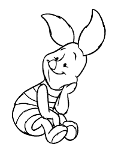
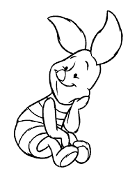
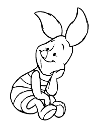

Пух підтюпцем подався додому і по дорозі був такий заклопотаний новою пісенькою, що коли він зненацька побачив Паця, який зручно вмостився в його найкращому кріслі,
то спромігся лише почухати потилицю й поринути в глибоку задуму: до чиєї ж він хатки втрапив?
- Привіт, Пацю,- сказав Пух.- А я гадав, тебе немає вдома.
- Ні, Пуше,- сказав Паць.- Це тебе немає вдома.
- Може, й так,- сказав Пух.- Принаймні я певен, що когось із нас вдома таки немає.